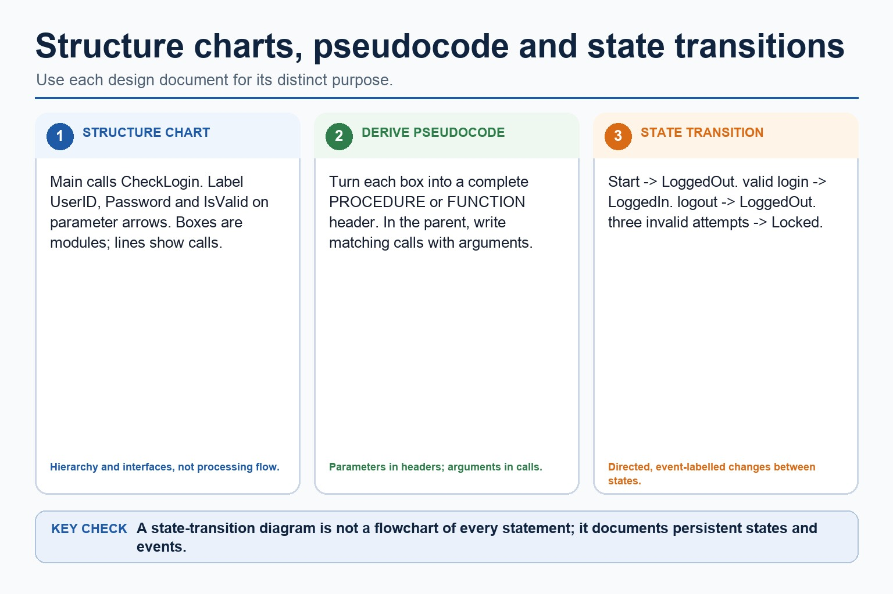
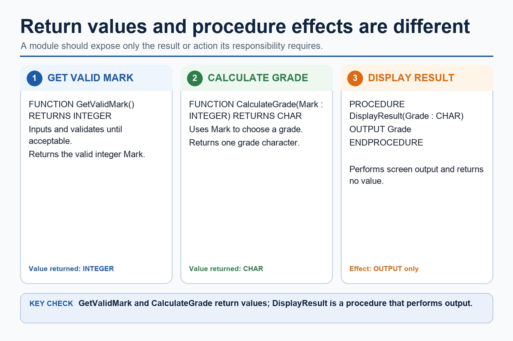
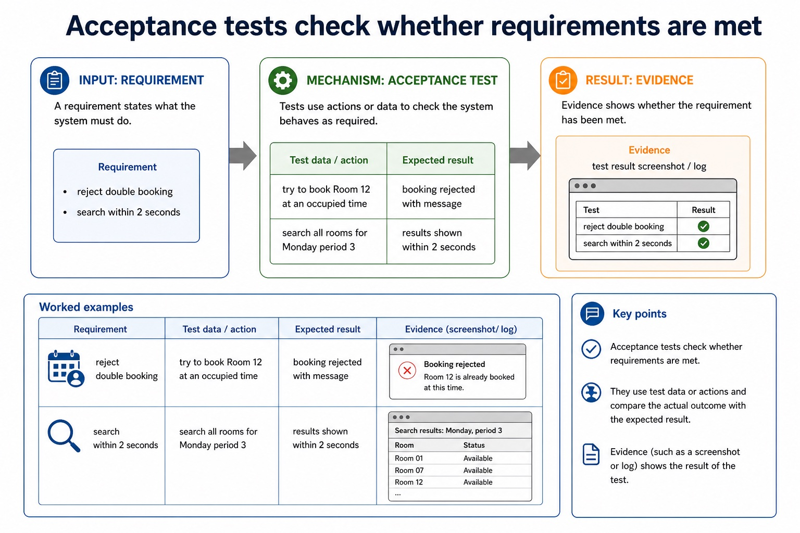
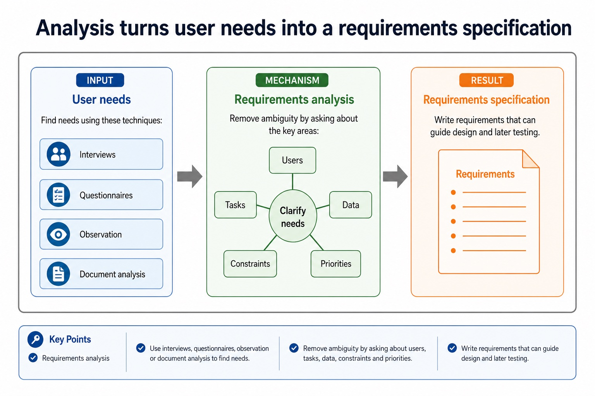
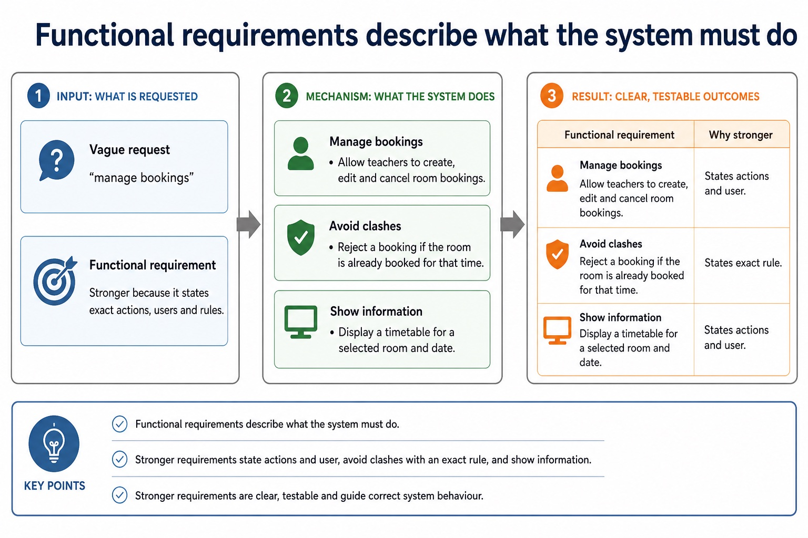
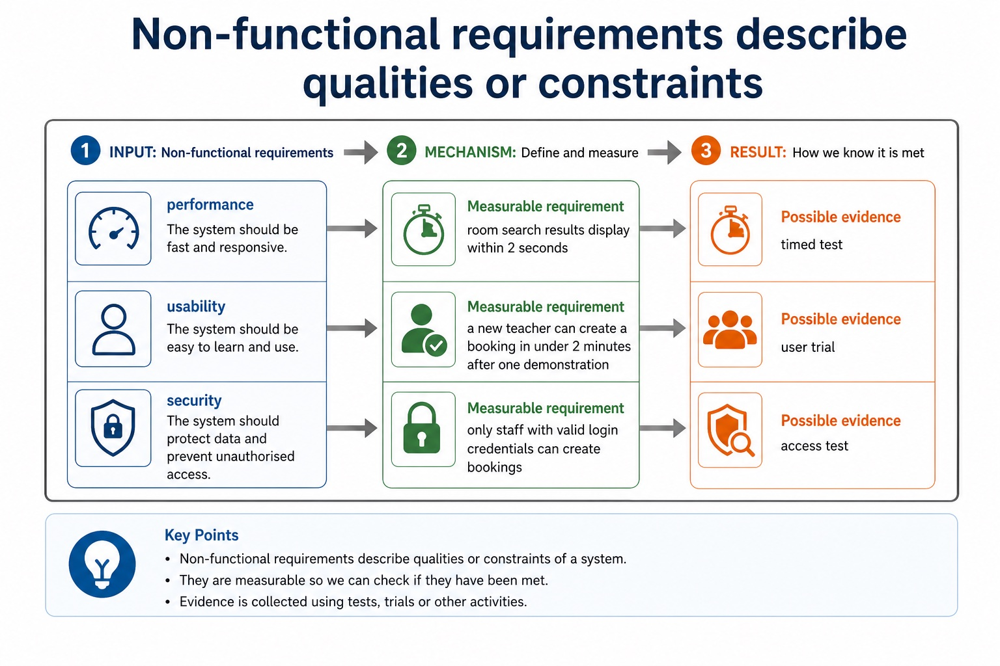
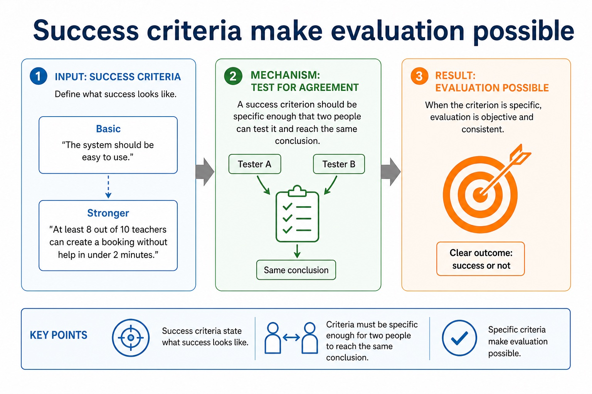

Cambridge AS9618 | Paper 2 | Section 12: Software development
Structure charts and module interfaces
Flexible-depth lesson
S12.02 | Learn from the diagrams, test the method, then choose the practice you need.
Choose a Quick, Full or Deep route
Quick route
Use the diagnostic, learning objectives, first worked example and foundation question. Stop once the learner can explain the central distinction accurately.
Full route
Use every knowledge-point material set, the worked method, the terminology check and all questions.
Deep route
Add the prerequisite refresher, ask learners to connect the concept checklist, discuss the labelled extension and complete a transfer question without a model answer.
Part 1 | optional depth
Prerequisite knowledge and quick diagnostic
Recall S11.06 before starting this lesson.
Give one accurate definition or method step before continuing. If it is missing, revisit only that prerequisite.
Open optional prerequisite refresher
Define and use a procedure; explain when the use of a procedure is appropriate; use parameters with none, one or more values passed by reference or by value.
Understand and use procedures with parameters passed by reference and by value.
Part 2 | knowledge-point material sets
Learn each point through visuals
Follow the map, the three-part explanation and the concrete cue. Open precise wording only after the idea is clear.
Open the concept checklist and choose what to teach
structure
charts
parameters
derive
pseudocode
01
S12.02 · process
Structure charts and module parameters
Concept map
structurechartsparametersderivepseudocode
See how it works
StartUse a structure chart to decompose a problem into subtasks and express the parameters passed between modules, procedures and functions
ChangeDescribe its purpose, construct one for a given problem and derive equivalent pseudocode from it
CheckTo construct a structure chart, place the controlling module at the top, split the problem into one-responsibility subtasks, connect each caller to its called modules, and…
S12.02 diagrams
1 / 2
01
Comparison · 1 of 2
Structure charts, derived pseudocode and state transitions

Open text transcript
A structure chart shows module hierarchy, calling relationships and labelled parameters passed between modules, procedures or functions.
Derive pseudocode by turning each box into a complete subprogram header and each hierarchy connection into a matching call with arguments.
A separate state-transition diagram marks the start state and uses directed, event-labelled transitions between persistent states; it is not a flowchart of processing steps.
02
Comparison · 2 of 2
Pass data into a module and return only what is needed

Open text transcript
Parameter arrows on a structure chart document the values passed between modules.
A function returns a value to its caller, while a procedure performs an action without returning a value.
The module interface must match the corresponding pseudocode header and call.
Open precise syllabus wording
Understand, construct and use structure charts, including parameters, and derive pseudocode.
Use a structure chart to decompose a problem into subtasks and express the parameters passed between modules, procedures and functions. Describe its purpose, construct one for a given problem and derive equivalent pseudocode from it.
Supporting diagram library
1 / 9
01
Diagram · 1 of 9
A subprogram interface connects caller and header
Open text transcript
A subprogram interface gives the caller the name, parameter list and types, and any return value or type.
A procedure or function header declares that interface.
A parameter is named in the header; an argument is the actual value or variable supplied at a call.
02
Diagram · 2 of 9
Acceptance tests check whether requirements are met

Open text transcript
Acceptance tests
Requirement
Test data/action
Expected result
Evidence
reject double booking
try to book Room 12 at an occupied time
booking rejected with message
03
Diagram · 3 of 9
Analysis turns user needs into a requirements specification

Open text transcript
Requirements analysis
Use interviews, questionnaires, observation or document analysis to find needs.
Remove ambiguity by asking about users, tasks, data, constraints and priorities.
Write requirements that can guide design and later testing.
04
Diagram · 4 of 9
Is the criterion testable?
Open text transcript
Criteria checker
Criterion
05
Diagram · 5 of 9
Functional requirements describe what the system must do

Open text transcript
Functional requirements
Vague request
Functional requirement
Why stronger
manage bookings
allow teachers to create, edit and cancel room bookings
states actions and user
avoid clashes
06
Diagram · 6 of 9
Non-functional requirements describe qualities or constraints

Open text transcript
Non-functional requirements
Measurable requirement
Possible evidence
performance
room search results display within 2 seconds
timed test
usability
a new teacher can create a booking in under 2 minutes after one demonstration
07
Diagram · 7 of 9
Turn vague requests into stronger requirements
Open text transcript
Interactive rewriter
Vague request
08
Diagram · 8 of 9
Different users reveal different requirements
Open text transcript
Stakeholders
Teachers
Need quick booking and clear room availability.
Admin staff
Need reports, conflict resolution and permission controls.
IT support
Need backup, user management and maintainable configuration.
09
Diagram · 9 of 9
Success criteria make evaluation possible

Open text transcript
Success criteria
“The system should be easy to use.”
Stronger
“At least 8 out of 10 teachers can create a booking without help in under 2 minutes.”
A success criterion should be specific enough that two people can test it and reach the same conclusion.
03Equivalent pseudocode declares those interfaces and calls them from ControlDoor with matching arguments.
04A provided state-transition diagram with Locked and Unlocked states serves a different purpose
05it documents event-driven changes rather than module hierarchy or processing sequence.
Open precise terminology and exam facts
Use a structure chart to decompose a problem into subtasks and express the parameters passed between modules, procedures and functions. Describe its purpose, construct one for a given problem and derive equivalent pseudocode from it.
A structure chart documents decomposition into modules, procedures and functions. Boxes name modules; hierarchy lines show which module calls another; labelled arrows show data or control parameters passed between them. Its purpose is to communicate modular structure and interfaces before coding.
To construct a structure chart, place the controlling module at the top, split the problem into one-responsibility subtasks, connect each caller to its called modules, and label every value passed. To derive equivalent pseudocode, turn each box into a complete PROCEDURE or FUNCTION header with corresponding parameters, add calls in the parent body with matching arguments, and preserve the shown hierarchy.
A state-transition diagram documents an algorithm by showing persistent states and the events that cause changes between them. Its syllabus requirement is to understand that purpose; constructing a state-transition diagram is retained only as Optional enrichment.
Beyond syllabus / 延伸知识（不要求背诵）
modern teams often use continuous integration to repeat building and testing whenever a program changes.
Part 3 | select by learner need
Practice by question type
constructdiagramfoundation6 marks
Question 1. For a login system, construct a structure chart in which Main calls ReadCredentials(UserID, Password) and CheckLogin(UserID, Password, IsValid), then derive equivalent subprogram headers and calls. A separate diagram shows LoggedOut, LoggedIn and Locked states: explain the purpose of this state-transition diagram.
Show answer and marking guidance
Answer: structure chart places Main above the two called modules; parameter arrows label UserID, Password and IsValid coherently; derived pseudocode contains matching complete headers and calls with arguments; identifies persistent states in the provided state-transition diagram; explains that labelled transitions show event-driven changes; distinguishes this purpose from module hierarchy or a flowchart of processing steps
Marking guidance: Do not award construction marks for the state-transition diagram; the construction marks apply to the structure chart only.
Common error: For the command word construct, perform that exact action; do not replace it with an unrelated fact.
applyrecallapplication2 marks
Question 2. What does a box represent in a structure chart?
Show answer and marking guidance
Answer: A module, procedure or function.
Marking guidance: Award one mark for each distinct, technically accurate point or method step.
Common error: Do not repeat the same point in different words; each mark needs a separate idea or method step.
explainexplaintransfer2 marks
Question 3. How are parameters represented and then derived into pseudocode?
Show answer and marking guidance
Answer: Labelled arrows show values passed; the same values appear as parameters in the called header and arguments in the caller's call.
Marking guidance: Award one mark for each distinct, technically accurate point or method step.
Common error: Do not copy the worked example unchanged; transfer the method and check it against the new context.
Related past-paper indexes
Reference
Marks
Command word
Question type
9618/21/W/25 Q7(b)
5
complete
recall
9618/22/W/25 Q8(a)
4
complete
write
9618/23/W/25 Q7(b)
4
complete
recall
9618/22/W/23 Q7(a)
4
complete
recall
Index only: Cambridge question and mark-scheme wording is not reproduced on this public course page.
Part 4 | close when ready
Summary and exam reminders
Summary
Define structure charts and module interfaces with the exact technical vocabulary expected by the syllabus.
Use the lesson method on a fresh context and show the intermediate decision, representation or calculation.
Match the shape of the answer to the command word and the available marks.
Check the final answer against the scenario instead of repeating a memorised sentence.
Common error to correct
Students often describe the lifecycle as a fixed checklist. Correction: development is iterative; findings can send a project back to earlier stages.
Exam technique
Follow the command word: state gives a fact; explain links a cause to a consequence; compare covers both sides.
Match the number of independent points or method steps to the available marks.
For structure charts and module interfaces, use the exact technical term before applying it to the scenario.